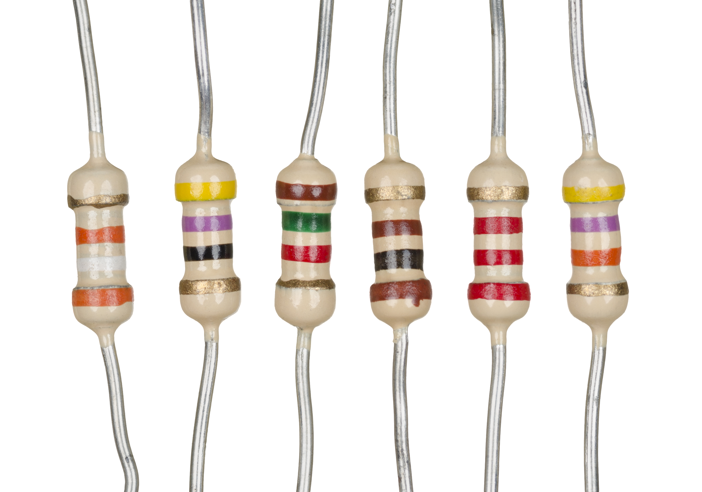
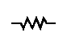
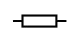

Resistors
Because the relationship between voltage, current, and resistance in any circuit is so regular, we can reliably control any variable in a circuit simply by controlling the other two. Perhaps the easiest variable in any circuit to control is its resistance. This can be done by changing the material, size, and shape of its conductive components (remember how the thin metal filament of a lamp created more electrical resistance than a thick wire?).
What is a Resistor?
Special components called resistors are made for the express purpose of creating a precise quantity of resistance for insertion into a circuit. They are typically constructed of metal wire or carbon and engineered to maintain a stable resistance value over a wide range of environmental conditions. Unlike lamps, they do not produce light, but they do produce heat as electric power is dissipated by them in a working circuit. Typically, though, the purpose of a resistor is not to produce usable heat, but simply to provide a precise quantity of electrical resistance.
Resistor Schematic Symbols and Values
The most common schematic symbol for a resistor is a zig-zag line:
Resistor values in ohms are usually shown as an adjacent number, and if several resistors are present in a circuit, they will be labeled with a unique identifier number such as R1, R2, R3, etc. As you can see, resistor symbols can be shown either horizontally or vertically.
In keeping more with their physical appearance, an alternative schematic symbol for a resistor looks like a small, rectangular box:
Resistors can also be shown to have varying rather than fixed resistances. This might be for the purpose of describing an actual physical device designed for the purpose of providing an adjustable resistance, or it could be to show some component that just happens to have an unstable resistance:

In fact, any time you see a component symbol drawn with a diagonal arrow through it, that component has a variable rather than a fixed value. This symbol “modifier” (the diagonal arrow) is standard electronic symbol convention.